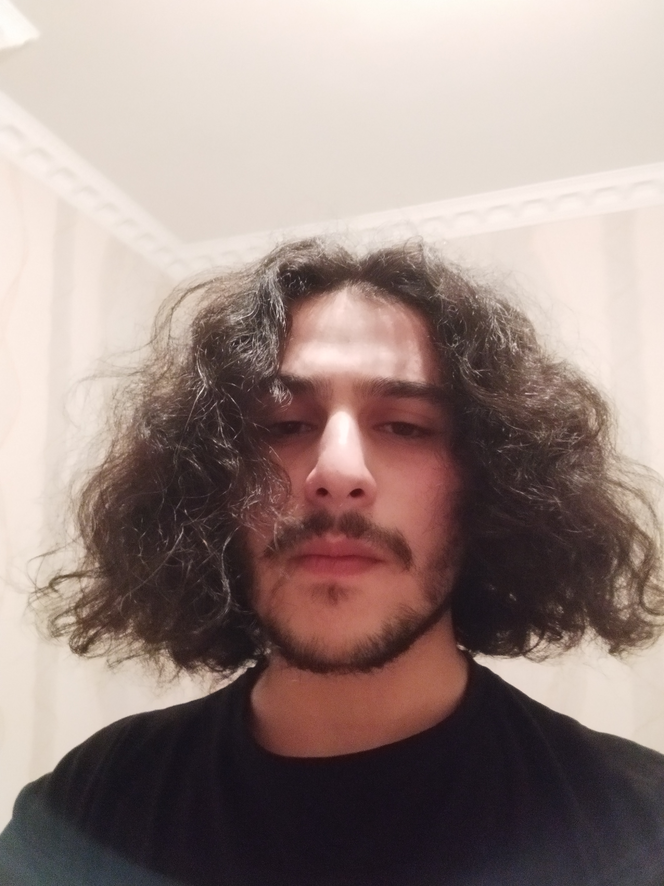

My name is Nizami Uzunalovi, I was born in 2002 march 21st in the capital city of Georgia - Tbilisi.
Since i was small i liked creating things. That is the reason why i had creative outbursts. I started creating music when i was 15. You can listen to my only good songs here and here. I learn programming because it enables me to create things from abstract bunch of symbols just like creating music from random bunch of sounds.